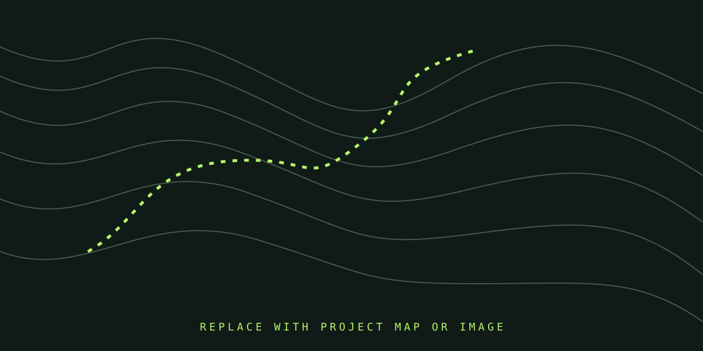

PROJECT CASE STUDY / [EDIT YEAR]
[EDIT PROJECT TITLE]
[EDIT STUDY AREA] · [EDIT COUNTRY]

The question
[In one or two sentences, describe the geographic or environmental question and why it matters.]
Data & tools
[Name your data sources, dates, spatial resolution, software, and important limitations.]
Workflow
- [Step 1: data preparation]
- [Step 2: analysis or model]
- [Step 3: validation and map design]
Findings
[Summarize the result. Add numbers only when you can verify them. Explain one caveat or limitation.]
Maps & gallery
Replace the image below with a second figure, workflow diagram, field photo, or interactive map screenshot.

What I learned
[Write what you contributed, what was difficult, what you learned, and what you would improve next.]
Code sample (optional)
For short examples, paste a cleaned excerpt here. For full scripts, link to a GitHub repository instead. Remove secrets, tokens, private data, and credentials before publishing.
// Paste a short, shareable code excerpt here
// or remove this code block and use the GitHub link.Google Earth Engine app (optional)
Use the live link in the sidebar. If your Earth Engine App allows public viewing and embedding, you can show it here.